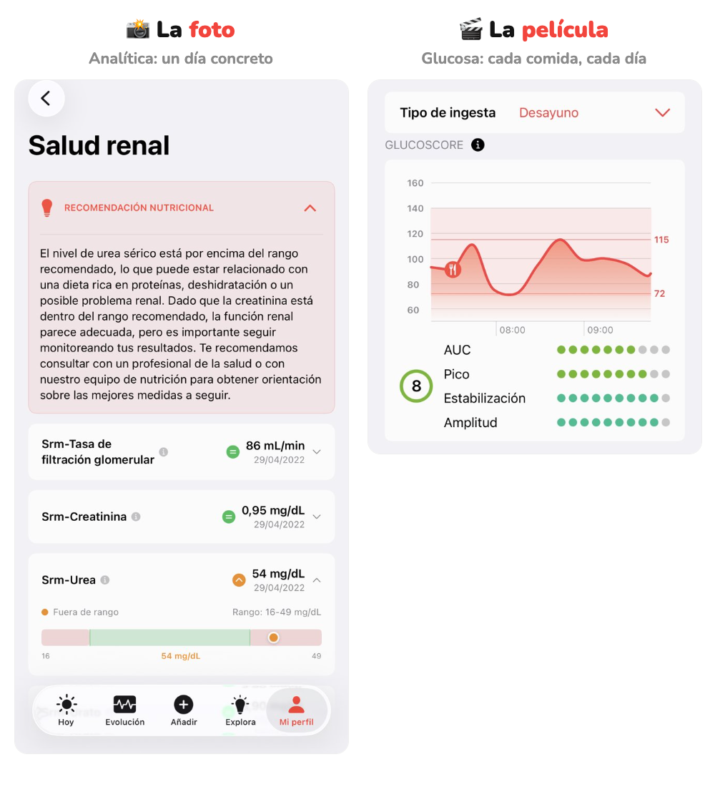

Glucovibes por dentro
Tu salud no es una foto. Es una película.
¿Entenderías una película con solo 10 fotogramas?
Desliza →
Hacemos visible lo invisible
¿Entenderías una película con solo 10 fotogramas?
Desliza →

Capturas reales de la app Glucovibes de un Viber.
glucovibes.com